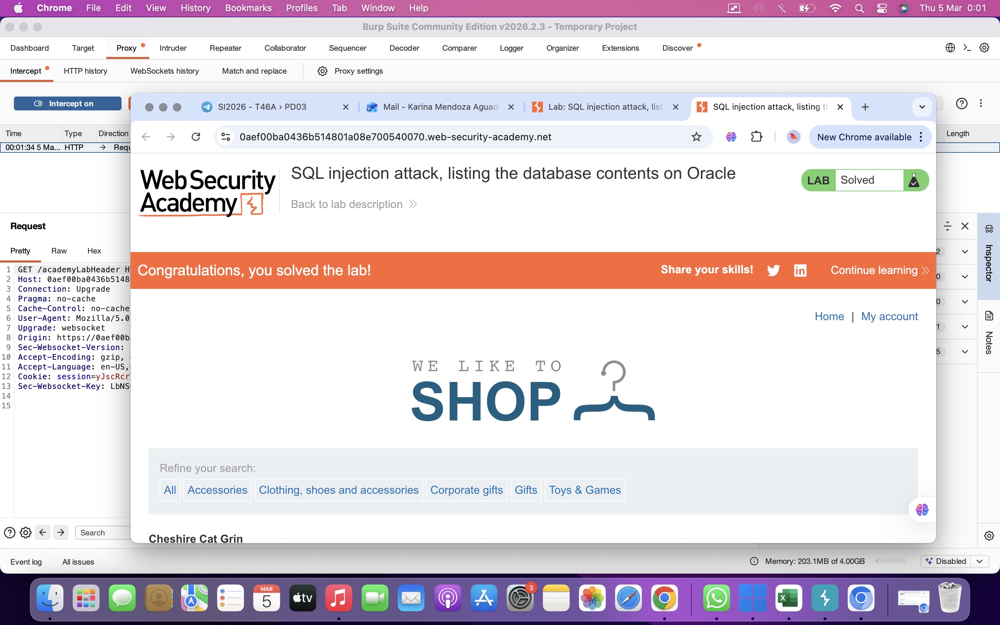

SQL injection attack, listing the database contents on Oracle
El objetivo de este laboratorio es explotar una vulnerabilidad de SQL Injection para enumerar el contenido de una base de datos Oracle y recuperar credenciales almacenadas en una tabla de usuarios.
El atacante debe identificar la tabla que contiene los nombres de usuario y contraseñas, recuperar estos datos y utilizar la contraseña del usuario administrador para iniciar sesión en la aplicación.
La vulnerabilidad se encuentra en el filtro de categorías de productos de la aplicación web.
Cuando el usuario selecciona una categoría, el servidor ejecuta una consulta SQL similar a la siguiente:
Debido a que la entrada del usuario no es validada correctamente, es posible inyectar consultas adicionales utilizando UNION SELECT.
En bases de datos Oracle se utilizan tablas del sistema como all_tables y all_tab_columns para obtener información sobre la estructura de la base de datos.
Determinar número de columnas:
Listar tablas de la base de datos:
Listar columnas de la tabla de usuarios:
Obtener credenciales:
Primero se identificó el número de columnas que devolvía la consulta original utilizando una inyección UNION SELECT.
Posteriormente se consultó la tabla del sistema all_tables para obtener la lista de todas las tablas presentes en la base de datos Oracle.
Después se utilizó la tabla all_tab_columns para identificar las columnas de la tabla que almacenaba las credenciales de los usuarios.
Finalmente se ejecutó una consulta UNION para recuperar los nombres de usuario y contraseñas almacenados en dicha tabla.
Después de ejecutar los payloads, se recuperaron las credenciales de los usuarios almacenadas en la base de datos.
Utilizando la contraseña del usuario administrator, fue posible iniciar sesión en la aplicación y resolver el laboratorio.
